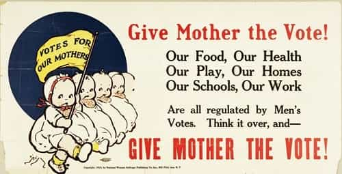

Michael is the author of Staying Married in a Degenerate Age. Follow him on Twitter or Facebook. You can read more of his writing at Honor and Daring.


Recently, I was chatting with a German friend about the sexual assaults in Cologne of women by the “rapefugees” that had been invited into the country by Chancellor Merkel.
I asked my friend if he thought that public opinion was turning against Germany’s open door policy for third world immigrants. He said that while people were beginning to question the wisdom of the policy, most Germans still felt guilty about what happened in World War II. Germans have been so brow beaten for events that happened 70 years ago, that they feel obligated to commit civilizational suicide.
Collective guilt has been effectively used by our elites to engineer Western societies to fit their utopian vision. If we are going to make any progress in rolling back these transformations, we need to get rid of toxic collective guilt. Here are some examples of collective guilt.

A citizen of a country cannot be held responsible for the actions of his government. For example, I opposed the US invasion of Iraq by President Bush, but my opposition had no bearing on his decision. Even those citizens who supported the war are not to blame because Americans were sold a rosy picture of how the war would proceed. The blame for the war lies solely with President Bush and his advisers.
Similarly, the German people are not responsible for the actions of Hitler and the National Socialists. Hitler ran on a platform of restoring the dignity of Germany after its humiliation under the Treaty of Versailles—not on a platform of conquering Europe or murdering Jews.
Japan is another nation that was made to feel guilty for its role in World War II. As part of its surrender, Japan, like Germany, was forced to give up its martial character even though this was an integral part of Japanese culture. The rise of effeminate men in both Germany and Japan is partly the result of the evisceration of the martial culture of both countries after the war.
German women in lying in the streets of Berlin after having been raped and murdered by the Red Army.
The Holocaust weighs heavily on everyone’s conscience. Some have argued that Europeans and Americans must take on millions of African and Arab “refugees” because they failed to take in Jewish refugees who were fleeing the Holocaust.
While the Holocaust was a terrible event, it is far from the worst of the mass murders that occurred even just in the twentieth century. Approximately 12 million people—6 million Jews and 6 million Christians and Gypsies—lost their lives in the Nazi death camps, but murders perpetrated by Marxist regimes were far worse.
Conservative estimates put the number of people murdered by the Soviet regime at a staggering 61 million. The People’s Republic of China killed 76.7 million of its own people. And in Cambodia, Pol Pot and his followers murdered 2 million people out of a population of 7 million.
By the way, the WWII Allies don’t have anything to be proud of either. They were unnecessarily merciless with the defeated enemy. Journalist Michael Walsh wrote:
Typically, British administered prisoner-of-war camps were worse than [Nazi death camp] Belsen long after the war had ended and war disruption ceased. Tragically even civilians were illegally held, deported and murdered in the tens of thousands.
Walsh recounts other atrocities inflicted on the German POWs including starvation, torture, and slavery.
The Soviets were even more monstrous towards Germans. Soviet troops raped over 2 million German women—some of them up to 70 times. About 240,000 women died as a result of those rapes.
Rather than feeling guilty about these atrocities, learn lessons on how to avoid them in the future—and move on. Don’t select one and hold it above all the others.

Muslims have a rich history of slavery down to the present day.
American slavery is a similar situation. It is most definitely a black mark (no pun intended) upon American history. The guilt that some white Americans have over slavery is so acute that it probably played a large reason in them voting for Obama—even though he is not descended from slaves.
I’ve spoken to college graduates—products of the American educational system—who think that Africans are the only people who have ever been held as slaves. The truth is that slavery was widely practiced in history and almost every group of people was enslaved at one point or another.
The Romans had Greek, British, English, and German slaves. The Persians held slaves from all over their empire. The Arabs were notorious slave traders. The Turks preyed on white Christians and enslaved them. And some etymologists speculate that the Slavic peoples derive their very name, “Slav,” from the fact that they were slaves at some point.
If you really want to get your shorts in a bunch about slavery, don’t vote for some incompetent black guy—work to stop the slavery that still exists today. About 35,800,000 people are still held as slaves throughout the world. Muslims are responsible for much of this modern slavery, but because Islam is the darling of the Left, there is very little reporting on the topic.

Every battle that feminism has won has been the result of guilt. Early feminists lobbied to be allowed to vote because, how can you love your mother, but deny her the vote?
The liberalization in divorce laws was also supposed to help women. Back in the patriarchal days, women who were abused by their husbands had no way out of terrible marriages. They were stuck with a philandering or physically abusive husband. Men felt guilty so they liberalized the divorce laws. Now, women are not stuck in terrible marriages. They are free to get a divorce so that they can escape a philandering or physically abusive boyfriend.
Guilt also drove the affirmative action policies that women now benefit from. Because women were oppressed homemakers in the past, companies and universities must now give them preferential treatment in hiring and admissions. Now women are free to spend their reproductive years toiling in a cubical to increase the bottom line of a multinational corporation. So much win!

There are many other things that we feel guilty about: climate change, starving children in Africa, Asian sweatshops, colonialism, the crusades, the Iraq War, and paying Jennifer Lawrence less than her male co-stars. But the truth is that all of this is fake guilt because there is nothing that you could have done to change the outcome.
Fake collective guilt is toxic because it gets us to accept the bad policies of the social engineers. They promise that if we just make this one change, all of our fake guilt will be expiated. But we find that no matter how many changes we make, the fake collective guilt remains like Lady Macbeth’s spot.
This year, drop all of your collective guilt. Instead, feel guilty only about things that you have personally done wrong. By taking responsibility for our own actions, we will make the world much better than any of the legislation pushed by the social engineers.
Read More: Understanding The Difference Between Guilt And Shame